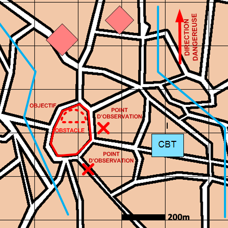

NIVEAU :Automate
ARME :Melee
MISSION :Harceler
Objectif principal
- Détruire / Neutraliser
Modalités d'exécution
-
Progresser jusqu'aux positions d'observation :
- Echelon d'éclairage éclaire ;
- GEN en appui mobilité.
-
Mettre en place le plan d'obstacle (optionnel) ;
-
Rejoindre les points d'observation et se poster pour surveiller l'objectif :
- sur les positions de tir si précisées ;
- dans la zone de l'objectif ou dans des blocs urbains à proximité sinon.
-
Surveiller l'objectif ;
-
Si des ennemis sont passés en paramètre, les prendre à partie lorsqu'ils sont sur l'objectif. Sinon, prendre à partie tous les ennemis présents sur l'objectif en changeant de position de tir après chaque tir .
Schéma de modélisation

Paramètres obligatoires
Fuseau : Zone de responsabilité.
Direction Dangereuse : Orientation privilégiée des capteurs.
Objectif (parmi les objectifs suivants)
Bloc Urbain :
Bloc urbain à harceler.
Zone :
Zone à harceler.
Paramètres optionnels
A partir de : Positions à partir desquelles harceler.
Nombre d'échelons (1 par défaut)
Obstacles: Obstacles à construire.
Valoriser obstacles: Indique si on valorise les obstacles après construction.